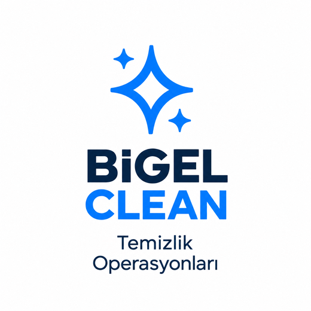
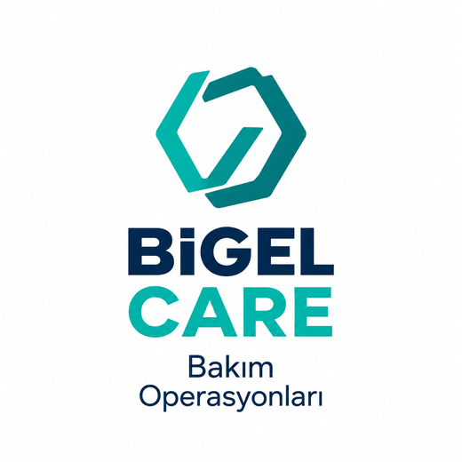
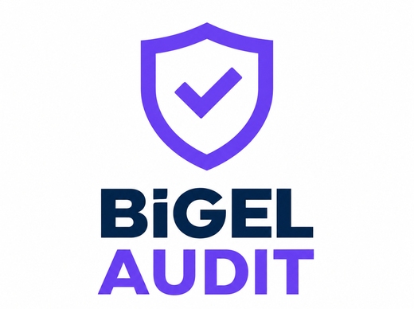
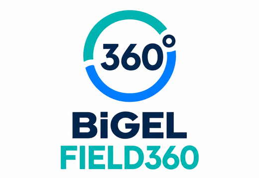
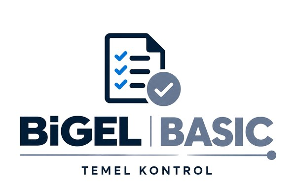
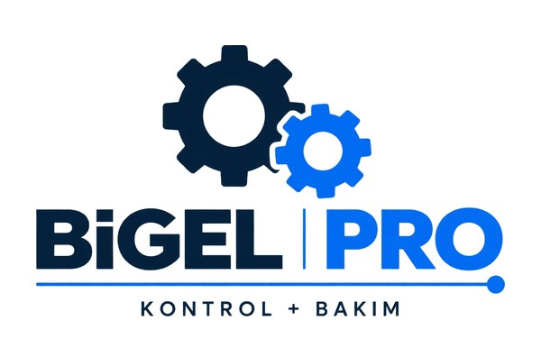
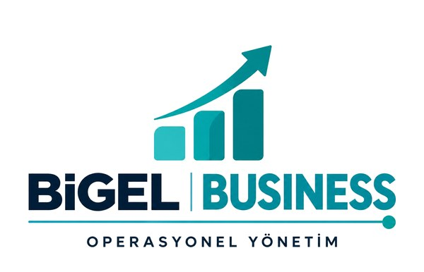
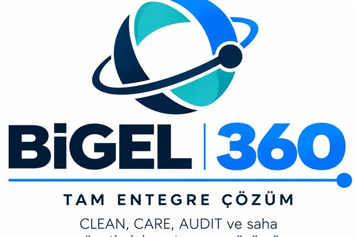

Sahadaki Gücünüz.
Çok lokasyonlu markaların temizlik, bakım ve denetim operasyonlarını Türkiye genelinde tek standartla planlıyor, uyguluyor ve fotoğraflı kanıtla raporluyoruz.
Yerel saha gücü. Merkezi operasyon. Ölçülebilir sonuç.
ilde erişilebilir yerel ekip ağı
bölgesel operasyon ekibi
aylık planlı saha ziyareti
zorunlu fotoğraf doğrulama oranı
Dört ürün. Tek BİGEL standardı.
Her ürün bağımsız kullanılabilir ya da aynı ziyaret planında birleşir. Hepsi aynı kontrol listesi, fotoğraf açısı ve kapanış kuralıyla çalışır.

TEMİZLİK OPERASYONLARIStandart her noktada aynı.
Kanopi, tabela, totem, cephe ve otopark için planlı dış alan temizliği. Öncesi ve sonrası fotoğrafla doğrulanır.
Çözümü Gör →
BAKIM OPERASYONLARIArızayı beklemeden, sahayı koruyun.
Küçük bakım, onarım ve saha müdahalesi. Tespitten fotoğraflı kapanışa tek iş emri akışı.
Çözümü Gör →
DENETİM & KALİTESahadaki standardınızı görün.
Marka, görsel, temizlik, fiziksel durum ve müşteri deneyimi denetimi. AUDIT 100 ve EV Audit30 ile skorlanır.
Çözümü Gör →
SAHA YÖNETİM PLATFORMUSahanın tamamı tek merkezde.
Temizlik, bakım, denetim ve aksiyonu tek sözleşme, tek standart ve tek raporlamada birleştirir.
Çözümü Gör →Sadece yapmıyoruz. Ölçüyoruz.
Her ziyaret fotoğraf, kontrol listesi ve skor üretir. Bulgular iş emrine dönüşür, kapanışı sorumlu ve hedef tarihle takip edilir.
- Öncesi ve sonrası fotoğraf, GPS ve zaman damgası
- Soru bazlı skor ve kırmızı-sarı-yeşil durum özeti
- Sorumlu, hedef tarih ve kapanış kanıtıyla aksiyon takibi
- Lokasyon, bölge ve dönem karşılaştırmaları
Tabela — Hasarlı
Öncelik: Yüksek · İş emri açıldı
AçıkTabela — Yenilendi
Sonrası fotoğrafı eklendi · Yetkili teyidi alındı
KapandıPlanlamadan kapanışa tek kayıt zinciri.
Planlama
Lokasyon, görev, ekip ve SLA tanımı.
Uygulama
Temizlik veya bakım, standart prosedürle.
Denetim
Kontrol listesi, skor ve fotoğraf.
Raporlama
KPI, SLA ve lokasyon skoru.
Aksiyon
İş emri, sorumlu ve kapanış kanıtı.
Çok lokasyonlu her marka için.
Akaryakıt İstasyonları
Kanopi, totem, pompa adası, otopark ve saha çevresi.
Ev Şarj İstasyonları
Cihaz çevresi, kablo düzeni, park cebi ve yönlendirme. Audit30 ile skorlanır.
Restoran & Fast Food
Cephe, cam, tabela, dış oturma ve arabaya servis alanı.
Perakende & Mağazacılık
Vitrin, görsel alan, mobilya, giriş ve mağaza çevresi.
Bankacılık
Şube girişi, ATM kabini, cam ve cephe, banko ve seperatörler.
Otomotiv
Showroom camı, tabela, araç sergileme alanı ve otopark.
Lojistik & Depo
Saha girişi, yükleme alanı, zemin çizgileri ve bariyerler.
AVM & Plaza
Ortak dış alanlar, yönlendirme, kolon kaplamaları ve otopark.
İhtiyacınıza göre ölçeklenen paketler.

BİGEL BASICTemel Kontrol
Periyodik kontrol ve temel saha raporlama.

BİGEL PROKontrol + Bakım
Kontrol, bakım ve küçük müdahaleleri kapsar.

BİGEL BUSINESSOperasyonel Yönetim
Düzenli operasyon yönetimi, raporlama ve öncelikli destek.

BİGEL 360Tam Entegre Çözüm
CLEAN, CARE, AUDIT ve saha yönetiminin uçtan uca çözümü.
Saha operasyonunuzu birlikte tasarlayalım.
Pilot kapsamını seçili lokasyonlarla başlatır, sonuçlara göre bölgesel ve Türkiye geneli operasyona ölçekleriz.